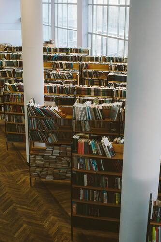

非正规教育
方式 1非正规教育指不以传统学位为核心的学习形式，例如社区课程、公益机构培训、职业技能班、兴趣社群学习等。 优点是进入门槛低、可快速获得支持与结构；缺点是质量参差，需要筛选。
- 从“目标”倒推：你想提升的是语言、计算机、职业技能，还是考试能力？先选一个方向再努力吧！
- 优先选择有产出的课程：能做作品、能拿到结业证明、能得到导师反馈的课程往往更有价值。
- 建立证据：保留作业、作品、证书、活动记录，未来求职或升学可用。
如果所在地区有图书馆、社区中心，通常是性价比很高的入口。
